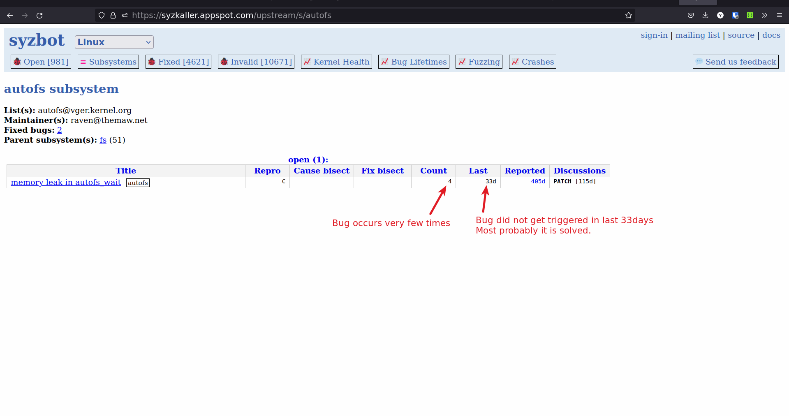
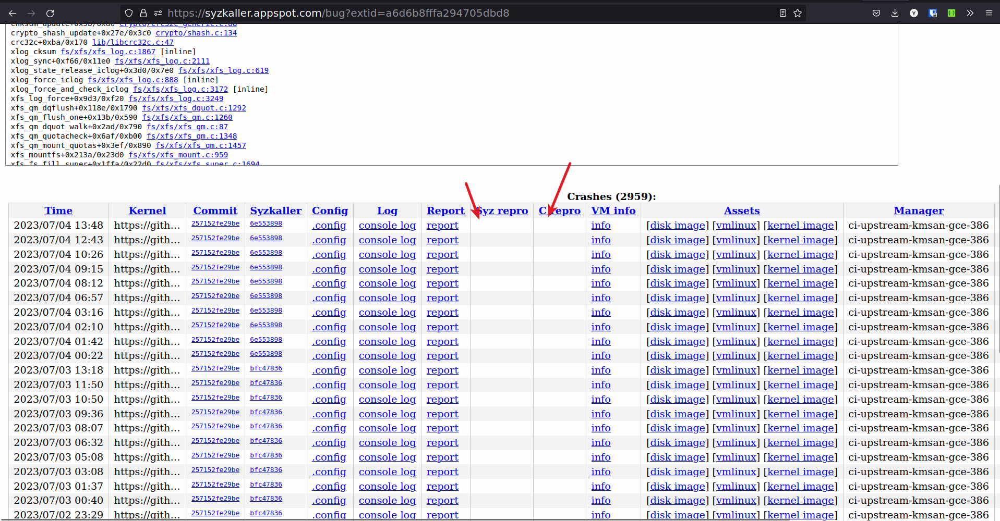
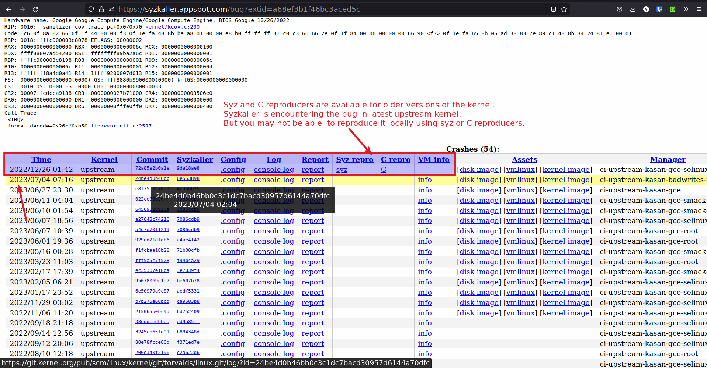
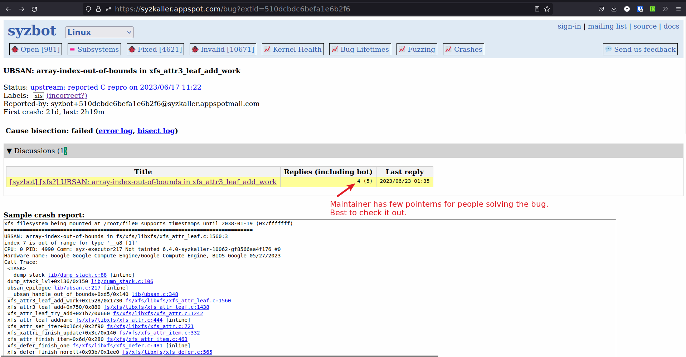
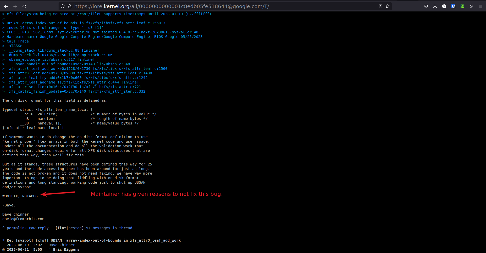
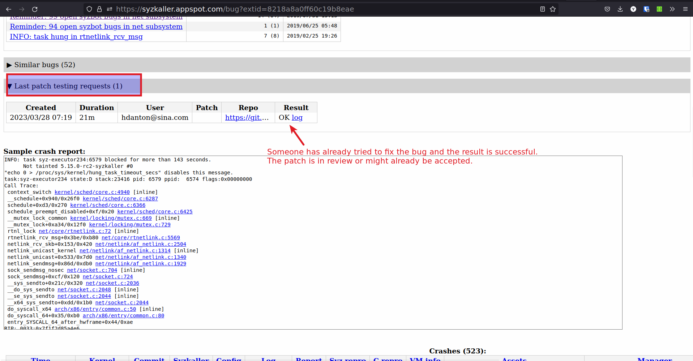

Solving syzkaller bugs
Mistakes I made while choosing bugs to solve from syzkaller
-
I started by choosing a subsystem and trying to solve bugs from that subsystem.

-
The problem with approach is
- Some subsystems have very few bugs (eg: i2c) and most of these bugs are trivial or
- Some subsystems have very active contributers, who solve the bugs within few days of occuring, competing with them becomes hard.
-
Don't limit yourself to one subsystem, try to solve bugs and help improve the code. You may have to learn and understand different subsystems, but that is what makes this fun.
-
-
Choosing bugs which do not have C or syz reproducers

- It is very hard to reproduce a bug locally without C or syz reproducers. If you cannot reproduce then chance of solving the bug becomes very small.
-
Reproducers are for old kernel versions

- Again you may not be able to reproduce the bug.
-
Choosing bugs which last occured more than 30 days
- If the bug is not occuring for more that 30 days then it is probably solved.
-
Choosing bugs which are marked WONTFIX or a false positive.
-
Some bugs are false positives or some bugs the subsystem maintainer does not want to solve
WONTFIX.

-
False positive patches will get rejected.
-
For WONTFIX bug, you may have to give a solid reason why this patch needs to be accepted.
-
-
Choosing bugs for which the patches are work in progress or have been submitted but not accepted.
-
You will see that someone has already test their patch in syzkaller and will most likely submit the patch or the patch is in review.

-
90 % times the patches will get accepted, hence treat these bugs as solved bugs.
-
Process for solving a syzkaller bug
-
Choosing the right bug to solve
- Bug should be recent (Last < 7d)
- Syz reproducer exists for the upstream (latest) version of the kernel.
- Disk and kernel image exists for the bug.
- .config file exists for the bug.
- Last patch testing requests is empty or last patches testing all failed.
- Check the Discussions to see if the bug is not marked as WONTFIX or NOTABUG
-
Try to reproduce the bug on the latest kernel
-
Download the .config file from syzkaller
-
Download the latest kernel
git clone git://git.kernel.org/pub/scm/linux/kernel/git/torvalds/linux.git -b master -
Compile the kernel with the .config file
-
Download the Disk image from syzkaller
-
Run the kernel with disk image by using the script below
#!/bin/bash KERNEL_IMG_PATH=$1 RFS_IMG_PATH=$2 qemu-system-x86_64 \ -m 2G \ -smp 2 \ -kernel ${KERNEL_IMG_PATH} \ -append "console=ttyS0 root=/dev/sda1 earlyprintk=serial net.ifnames=0 nokaslr" \ -drive file=${RFS_IMG_PATH},format=raw \ -net user,host=10.0.2.10,hostfwd=tcp:127.0.0.1:10021-:22 \ -net nic,model=e1000 \ -enable-kvm \ -nographic \ -pidfile vm.pid \ 2>&1 | tee vm.log# usage ./run-vm.sh ./bzImage ./disk-image.img -
Follow the steps in the doc to reproduce the bug.
- Syz reproducer is preffered over C reproducer.
-
-
Solve the bug, Use the tools and techniques from the doc to solve the bug.
-
Test the patch localy, by following the step 2.
-
Send the patch for testing to syzkaller.
-
Send an email to syzbot
syzbot+a6d6b8fffa294705dbd8@syzkaller.appspotmail.comand syzkaller google groups (syzkaller-bugs@googlegroups.com). -
Email body should have
#syz test: <git rep> <git repo branch> ================================= Your patchNote: It is better to send patch as attachment rather than inline, but I have not figured out how to do it yet.
-
-
Check if the test by syzkaller is ok.
-
Send the patch to the subsystem maintainer.